Gráficas
- 1 Introducción
- 2 Gráfica de tendencia
- 3 Gráfica de agrupados
- 4 Gráfica de tiempo real
- 5 Configurador
- 5.1 Series
- 5.2 Ejes Y
- 5.2.1 General
- 5.2.2 Series asociadas
- 5.2.3 Asintotas
- 5.3 Ejes X
- 5.4 Tipo de gráfica
- 5.4.1 Configuración tendencia
- 5.4.2 Configuración agrupados
- 5.4.3 Configuración tiempo real
- 5.5 Plantillas
- 6 Barra de herramientas
- 7 Elementos comunes
- 7.1 Panel de estadísticas
- 7.2 Tooltips fijos
1. Introducción
Una de las herramientas de análisis que dispone el sistema son las gráficas. La aplicación permite los siguientes tipos de gráficas:
- de datos históricos, llamada Tendencia
- por agrupaciones temporales, llamada Agrupados
- en tiempo real.
- y dispersión (deshabilitada).
Las gráficas se pueden crear desde la sección de accesos directos (1), desde el lanzador (2) o desde el shortcut (3).

1) Para crear la gráfica desde el lanzador se necesita tener señales en “Mi selección de señales”, seleccionar las señales que desea tener en la gráfica y pulsar uno de los botones correspondientes al tipo de gráfica deseado. Nota: En la sección de señales del explorador, pulsando el botón , dicha señal se añadirá a “Mi selección de señales”.
2) Desde la sección de accesos directos solo estará disponible la gráfica de tendencia. Al pulsar el botón se abrirá una gráfica de tendencia con las señales seleccionadas y con un periodo de una semana.
3) Al pulsar en el shortcut de gráficas se desplegarán las opciones para crear una nueva gráfica o crear una plantilla de gráfica. Pulsando en cualquiera de los dos se abrirá el asistente de creación de gráficas. Si no tenemos permisos para visualizar el inventario no se mostrará la opción de crear una plantilla. 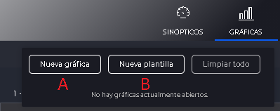
- Tipo de gráfica Las gráficas de correlación y dispersión estan deshabilitadas
- Señales Solo se mostrará si antes pulsamos en “Nueva gráfica” (A). Hay que seleccionar una señal como mínimo y como máximo se usará el valor configurado en el fichero de configuración.
- Plantillas Solo se mostrará si antes pulsamos en “Nueva plantilla” (B). Hay que seleccionar una plantilla como mínimo y tres como máximo. Solo se mostrarán plantillas que tengan como mínimo un atributo de tipo señal.
- Atributos Solo se mostrará si antes pulsamos en “Nueva plantilla” (B). Permite seleccionar atributos por cada una de las plantillas que seleccionamos en el paso anterior. Hay que seleccionar entre uno y tres atributos. Solo se mostrarán atributos de tipo señal.
- Fechas Permite seleccionar la configuración de fechas de la gráfica. Aplicará a todas las series.
Establecida la configuración inicial, se mostrará la gráfica configurada en la pantalla. El área central, la representación gráfica se corresponde con la configuración seleccionada previamente tipo de gráfica, fechas y series.
A la izquierda se dispone de un menú desplegable que permite modificar la configuración de la gráfica (1). Al cambiar entre las distintas secciones del menú se desplegará el menú de configuración situado en el panel derecho (3) el cual mostrará opciones específicas del menú seleccionado. Este menu estará oculto por defecto hasta que se pulse sobre la rueda dentada (2).
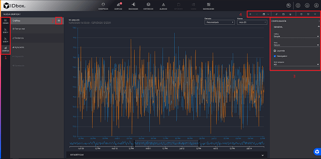
En la parte superior derecha se sitúa la barra de herramientas.
2 Gráfica de tendencia
La funcionalidad “Gráfica de tendencia” permite la representación de un conjunto de datos históricos a distintas resoluciones sobre una colección de puntos. Además, permite la representación de datos estadísticos y la aplicación de funciones matemáticas para la supervisión de los datos.
Para la creación de este tipo de gráfica, además de las opciones explicadas en el apartado anterior, la herramienta dispone de un acceso directo desde el explorador de documentos, para la creación rápida de este tipo de gráficas una vez seleccionadas las series.

Esta gráfica por defecto estará configurada con el periodo de las últimas 24 horas y marca Auto.
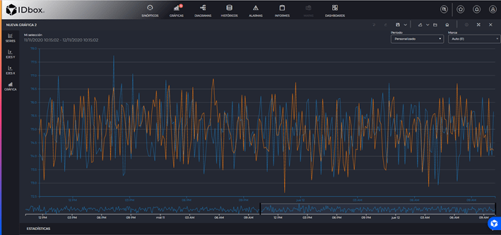
Desde la propia representación de la gráfica nos permite cambiar de manera rápida la configuración del periodo, permite la introducción de distintos intervalos de tiempo para realizar las consultas y la marca, frecuencia a la que se muestran los datos.
Se disponen de diferentes modos de interacción para analizar la ventana temporal seleccionada.
- Zoom arrastrando con el click izquierdo sobre la gráfica para profundizar en la marca de tiempo, esta acción se puede realizar también en el navegador.
- Arrastrar el navegador con click izquierdo para moverse en el tiempo.
- Arrastrar el navegador desde los bordes para aumentar o disminuir el intervalo temporal.
- Click derecho arrastrando en la dirección que se busque avanzar o retroceder en el tiempo.
- Rueda del ratón para aumentar o disminuir el intervalo temporal (Configurable en el fichero de configuración).
- Utilizando los botones de navegación que aparacen en la parte inferior de la grafica cuando se pasa el ratón por esa zona (imagen debajo). Permitirán avanzar y retroceder en el tiempo, además de aumentar o disminuir el intervalo temporal visualizado.

Se podrán configurar parámetros generales de la gráfica en el configurador
3 Gráfica de agrupados
La gráfica de agrupados permite representar los datos históricos de cualquier señal mostrando/agrupando los valores en escalas temporales comunes permitiendo visualizar los patrones en distintas agrupaciones temporales de las señales. La agrupación podrá hacerse según distintas medidas de agrupación estadística.

Desde la propia representación de la gráfica nos permite cambiar de manera rápida la configuración del periodo, permite la introducción de distintos intervalos de tiempo para realizar las consultas y el tipo estadístico.
Se podrán configurar parámetros generales de la gráfica en el configurador
4 Gráfica en tiempo real
Este tipo de gráfica permite consultar los valores de las señales seleccionadas en tiempo real. Los valores mostrados en la parte inferior del eje Y, pueden variar en función de si hay lectura de datos con valores cercanos.

A diferencia de las otras gráficas, en tiempo real no se selecciona un intervalo de tiempo a graficar, sino que se selecciona un número de muestras. Cuando se cargue una gráfica de tiempo real se cargarán los últimos X datos, seleccionados en el tercer paso del wizard. Por defecto, esta configuración cogerá el valor presente en el fichero de configuración.

El eje temporal se ajustará a las muestras recibidas. Se puede dar el caso de que se grafiquen dos señales con una frecuencia base muy diferente, y en ese caso la gráfica no se visualizará correctamente. Por ejemplo, si la señal 1 tiene su frecuencia máxima a 1 hora y la señal 2 la tiene a 1 segundo y con la gráfica configurada a 300 muestras, los datos de la señal 1 ocuparán 5 días, mientras que los de la señal 2 ocuparán 5 minutos. En este caso en la gráfica la señal 2 apenas será visible al final del eje temporal, por lo que se mostrará un aviso recomendando ocultar alguna de las señales. Las señales ocultas no se tendrán en cuenta para el cálculo del intervalo del eje X.
Se podrán configurar parámetros generales de la gráfica en el configurador
5 Configurador
El configurador de gráficas se divide en 4 secciones, representadas por los iconos de la barra lateral izquierda (1) que dan acceso a cada sección. Al hacer click en cada uno de ellos se expandirá un panel al lado con la sección. Por defecto no habrá ninguna sección seleccionada. Si se hace click en la sección ya seleccionada esta se ocultará.

5.1 Series
Muestra las series representadas en la gráfica y dispone de las siguientes acciones en la barra de herramientas:
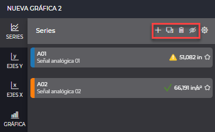
- Añadir: Esta acción abrirá una nueva ventana permitiendo la inserción de nuevas señales o funciones a la gráfica sin tener que abrir una nueva gráfica desde cero. Si queremos añadir funciones tendremos que buscar en la parte inferior izquierda de la ventana el apartado “Funciones”.
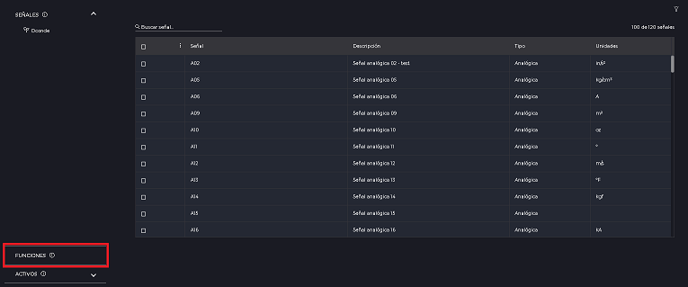
- Duplicar: Permite el duplicado de las selañes seleccionadas con su configuración.
- Borrar: Borrado de las series seleccionadas.
- Ocultar: Permite ocultar y visualizar en la gráfica las series seleccionadas.
Además de añadir, copiar, borrar, visualizar/ocultar series en la gráfica, se da la opción de realizar la configuración . Existen dos tipos:
- Única: los cambios realizados aplicarán a solo una serie.
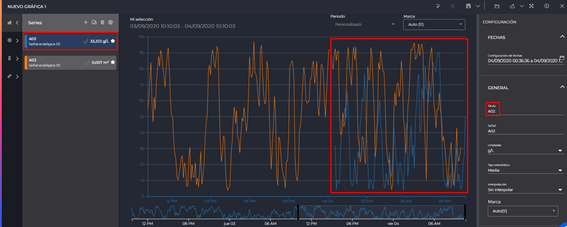
- Múltiple: los cambios realizados aplicarán a todas las series seleccionadas. Si no hay ninguna serie seleccionada se contarán todas como seleccionadas.

En la configuración múltiple no es posible editar todas las configuraciones como lo es en la configuración única.
Listado de configuraciones bloqueadas en la edición múltiple:
- Editar el título de una serie.
- Cambiar el tag o función de una serie.
- Si las series seleccionadas usan unidades distintas no se podrán editar las unidades.
- Si las series seleccionadas tienen distintos tipos de señal no se podrá editar el tipo estadístico.
Si dentro de nuestra selección tenemos seleccionada una función se bloquearán los siguientes campos:
- Tipo estadístico
- Unidades
Si estamos realizando una edición múltiple se mostrará un listado con todas las series de la gráfica. Cuando se muestre un campo en el que cada serie tiene un valor distinto se mostrará el campo con el valor vacio.
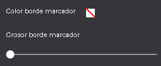
Una serie seleccionada cambia su color de fondo al color corporativo. Para seleccionar o deseleccionar una serie pulsar click izquierdo sobre ella. Se podrá utilizar la tecla “Shift” para realizar una selección múltiple rápidamente. Para ello, seleccionar la primera serie del listado que queremos, y luego pulsar sobre la última teniendo pulsada la tecla “Shift”, se seleccionarán automaticamente todas las series situadas entre la primera y la última.
También sera posible en este listado reordenar las series arrastrandolas con click izquierdo.
La configuración de una serie esta dividida en 4 bloques:
5.1.1 Fechas
Permite seleccionar el intervalo temporal para el que se mostrarán los datos. Se podrán escribir las fechas en el campo de texto o pulsar sobre el calendario (1) para que se abra el selector de fechas.

5.1.2 General
Permite seleccionar las características relativas a la configuración de los datos de la serie.

- Título: Permite cambiar el nombre de la serie. Este será el nombre con el que se identifica la serie en la interfaz (leyenda, menús, etc.).
- Señal: permite cambiar la señal mostrada en el gráfico por otra elegida del Selector de señales. Si estamos en tendencia se permitirá también la selección de funciones.
- Unidades: En el caso de que la señal seleccionada tenga asociada una unidad, podrá aplicarse una conversión de unidades a los datos representados (de entre las conversiones disponibles para esa unidad).
- Tipo estadístico: Permite seleccionar el tipo estadístico (cuando los datos representados no son datos brutos). Las opciones dependerán del tipo de señal seleccionada:
- Señales analógicas: Media, máximo, mínimo, varianza, desviación típica, cuenta, acumulado, máximo y mínimo y desviación típica respecto a la media.
- Señales discretas: Cuenta, moda, cuenta de valores true y cuenta de valores false.
- Señales digitales: Cuenta y moda
- Funciones: La selección de tipos estádisticos no está disponible para funciones.
-
Interpolación: Permite seleccionar la interpolación que se aplicará. Podrá ser Sin interpolar, Lineal, Paso antes y Paso después.
- Marca: Permite seleccionar la frecuencia para la que se pedirán los datos. Si la resolución es mayor que ‘Max’ serán datos estadísticos, en caso contrario serán datos brutos. La opción Auto permite que la marca se ajuste de forma dinámica según el periodo de tiempo seleccionado. Se podrán escribir marcas superiores a la última marca mostrada. Si la marca escrita son horas se ajustará a un divisor de 24 horas. Ejemplo: Si se introducen 7 horas, se cambiará automaticamente a 8 horas. Si se introducen 10 horas, se cambiará automaticamente a 12 horas.
5.1.3 Aspecto
Permite seleccionar las características de visualización de la serie en la gráfica.

- Tipo de línea: Permite modificar el formato de la representación gráfica. Las opciones son
- Línea: serie de segmentos que conecta los valores de la señal.
- Línea suavizada: curva suave que conecta los valores de la señal.
- Línea escalonada: serie de segmentos similar a la línea, pero que únicamente utiliza líneas verticales y horizontales para conectar los valores de la señal (la línea será horizontal hasta que tengamos un nuevo valor, en que se unirá mediante una recta vertical)
- Área: genera un área definido entre cero y los valores de la señal con el tipo línea.
- Columna: serie de columnas para cada valor de la señal.
- Marcador: se visualizará en formato de puntos solo los valores de la serie)
- Visible: Permite configurar la visibilidad de la serie.
- Color marcador: Permite configurar el color de los marcadores de cada uno de los valores representados.
- Grosor marcador: Permite configurar el tamaño de los marcadores de cada uno de los valores representados. Si es 0 no se mostrarán.
- Color borde marcador: Permite configurar el color del borde de los marcadores.
- Grosor borde marcador: Permite configurar el grosor del borde de los marcadores. Si es 0 no se mostrará.
- Color línea: Permite configurar el color de las líneas que unen los distintos valores.
- Grosor línea: Permite configurar el grosor de la línea. En caso de ser 0 no se mostrarán líneas (gráfica de puntos).
- Estilo de linea: Permite cambiar el estilo de la línea. Útil para diferenciar dos series con el mismo color.
- Opacidad: Permite cambiar la opacidad del relleno del area.
- Color columna: Permite cambiar el color de las columnas cuando estamos en modo columna.
El color de la columna solo esta disponible con tipo de linea Columna. En tipo columna solo estará disponible el color de columna. La opacidad solo esta disponible con el tipo de linea Area.
- Iconos de estado: Permite que en los marcadores en cuyo valor haya habido un cambio de estado se muestre el icono que representa dicho estado.
- Mostrar huecos: Botón que actua como acceso directo para filtrar el estado “OutOfDate”.
- Ocultar invalidos: Botón que actua como acceso directo para filtrar el estado “Invalid”.
- Filtrar estados: filtra por los diferentes estados dados de alta a nivel de aplicación.
5.1.4 Marcado de valores
Permite configurar una serie para que cuando sus valores sean superiores o inferiores a otra serie los valores aparezcan marcados con un area. Si no hay ninguna serie compatible en la gráfica esta sección estará bloqueada.
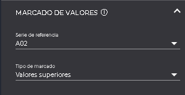
-
Serie de referencia: Aquí se seleccionará la señal con la que contrastar los valores. Para que una serie sea compatible y se permita seleccionar tiene que cumplir 2 condiciones. 1) La configuración de fechas tiene que ser igual 2) Las series tienen que estar asociadas a los mismos ejes, tanto X como Y
-
Tipo de marcado: Campo para indicar si queremos que los valores que se marquen sean los superiores o los inferiores.

5.1.5 Asíntotas
Permite la configuración de una recta asociada a la serie con un valor editable. En la parte superior encontraremos 3 botones para añadir asíntotas.

- Añadir asíntota: Permite añadir una asíntota (recta asociada). Cada asíntota añadida se mostrará en una lista en este apartado y podrá configurarse.
- Añadir límites representativos: Se añadirán las asintotas correspondientes a los límites representativos para la señal seleccionada (corresponden al máximo y mínimo de la configuración propia de la señal). Si ya están añadidas el botón cambiará para que la funcionalidad sea eliminarlas.
- Añadir máximo, mínimo y media: Se añadirán 3 lineas para la señal seleccionada correspondientes cada una al valor máximo, mínimo, y medio de los datos mostrados por esa señal en la representación. Si ya están añadidas el botón cambiará para que la funcionalidad sea eliminarlas.
Para cada asintota se podrán configurar las siguientes propiedades:
- Título: Permite cambiar el nombre de la asíntota, el cual se visualizará en la gráfica.
- Tipo de valor:
- Personalizado: Indicaremos en el campo valor la posición de la asíntota.
- Máximo representativo: Posicionará la asíntota en el valor máximo de la configuración de la serie.
- Mínimo representativo: Posicionará la asíntota en el valor mínimo de la configuración de la serie.
- Máximo: Posicionará la asíntota en el valor máximo de los datos pintados de la serie.
- Mínimo: Posicionará la asíntota en el valor mínimo de los datos pintados de la serie.
- Media: Posicionará la asíntota en el valor medio de los datos pintados de la serie.
-
Valor: Posición de la asíntota. Si la asintota no es del tipo “Personalizado” esta propiedad no se podrá modificar.
- Tipo de línea: Permite modificar el formato de la representación de la asíntota en la gráfica.
- Color: Permite configurar el color de la asíntota
- Marcado de valores: Permite definir bandas de rodadura (límites superiores e inferiores). Si se activan los valores de la serie que pasen por encima de la posición de la asintota mostrarán un área hacia la asintota.
5.2 Ejes Y
Muestra los ejes representados en la gráfica y dispone de las siguientes acciones en la barra de herramientas:
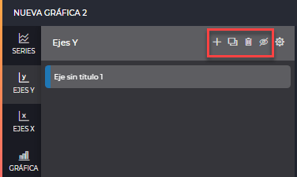
- Añadir: Esta acción añadirá un nuevo eje Y.
- Duplicar: Permite el duplicado de los ejes seleccionados con su configuración.
- Borrar: Borrado de los ejes seleccionados.
- Ocultar: Permite ocultar y visualizar en la gráfica los ejes seleccionados.
Si un eje no tiene una serie asociada no será representado en la gráfica
Además de añadir, copiar, borrar, visualizar/ocultar ejes en la gráfica, se da la opción de realizar la configuración . Existen dos tipos:
- Única: los cambios realizados aplicarán a solo un eje.

- Múltiple: los cambios realizados aplicarán a todas las series seleccionadas. Si no hay ningún eje seleccionado se contarán todos como seleccionados.
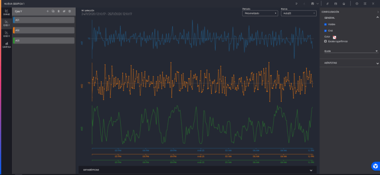
En la configuración múltiple no es posible editar todas las configuraciones como lo es en la configuración única.
Listado de configuraciones bloqueadas en la edición múltiple de ejes Y:
- Editar el título de un eje.
- Configuración de series asociadas.
Cuando se muestre un campo en el que cada eje tiene un valor distinto se mostrará el campo con el valor vacio.
Un eje seleccionado cambia su color de fondo al color corporativo. Para seleccionar o deseleccionar un eje pulsar click izquierdo sobre el. Se podrá utilizar la tecla “Shift” para realizar una selección múltiple rápidamente. Para ello, seleccionar el primer eje del listado que queremos, y luego pulsar sobre el último teniendo pulsada la tecla “Shift”, se seleccionarán automaticamente todos los ejes situados entre el primero y el último.
También sera posible en este listado reordenar los ejes arrastrandolas con click izquierdo.
La configuración de un eje esta dividido en 3 bloques:
5.2.1 General
Permite seleccionar las características generales del eje Y seleccionado.
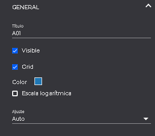
- Título: Permite modificar el título del eje.
- Visible: Casilla que permite modificar la visibilidad del eje.
- Grid: Casilla para mostrar u ocultar las líneas horizontales.
- Color: Permite modificar el color del eje.
- Escala logarítmica: Casilla que permite cambiar la escala con la que se representarán los valores (entre normal y logarítmica).
- Posición: Permite modificar la posición de los ejes (entre izquierda y derecha)
- Ajuste: Configura la escala del eje. Las opciones son:
- Auto: El eje se ajusta automáticamente a los valores de las señales vinculados al eje.
- Manual: Se despliegan dos configuraciones adicionales para indicar el Min y el Max de los ejes.
- Configuración del TAG: Se utilizan como máximo y como mínimo los valores máximo y mínimo configurados en la señal. Para que esta opción este disponible el eje solo puede tener asociada una serie con una señal analógica.
5.2.2 Serie asociadas
Muestra el listado de series vinculadas al eje seleccionado, acompañado de una casilla que estará marcada si la serie pertenece al eje seleccionado. Se puede vincular o desvincular una serie a un eje marcando o desmarcando dicha casilla. Si un eje no tiene series asociadas no se mostrará en la gráfica.

5.2.3 Asíntotas
Permite la configuración de una recta asociada al eje con un valor editable. En la parte superior encontraremos 2 botones para añadir asíntotas.
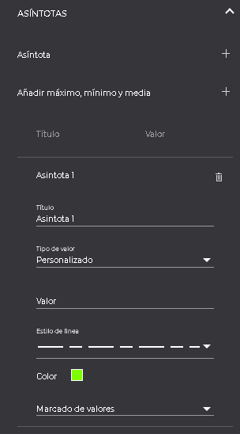
- Añadir asíntota: Permite añadir una asíntota (recta asociada). Cada asíntota añadida se mostrará en una lista en este apartado y podrá configurarse.
- Añadir máximo, mínimo y media: Se añadirán 3 lineas para la señal seleccionada correspondientes cada una al valor máximo, mínimo, y medio de los datos mostrados en el eje. Estos datos corresponden a la agrupación de todas las series que tenga asociadas el eje. Si ya están añadidas el botón cambiará para que la funcionalidad sea eliminarlas.
Para cada asintota se podrán configurar las siguientes propiedades:
- Título: Permite cambiar el nombre de la asíntota, el cual se visualizará en la gráfica.
- Tipo de valor:
- Personalizado: Indicaremos en el campo valor la posición de la asíntota.
- Máximo: Posicionará la asíntota en el valor máximo de los datos pintados de la serie.
- Mínimo: Posicionará la asíntota en el valor mínimo de los datos pintados de la serie.
- Media: Posicionará la asíntota en el valor medio de los datos pintados de la serie.
-
Valor: Posición de la asíntota. Si la asintota no es del tipo “Personalizado” esta propiedad no se podrá modificar.
- Tipo de línea: Permite modificar el formato de la representación de la asíntota en la gráfica.
- Color: Permite configurar el color de la asíntota
- Marcado de valores: Permite definir bandas de rodadura (límites superiores e inferiores). Si se activan los valores de la serie que pasen por encima de la posición de la asintota mostrarán un área hacia la asintota.
5.2.4 Ejemplos configuraciones
Ejemplos - configuraciones a nivel de eje: a) Eje visible; grid visible; posición eje: izquierda; series asociadas: una serie de las 2 que tiene el gráfico; sin asíntotas.
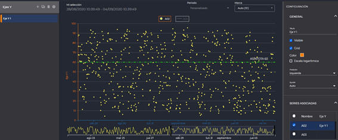
b) Eje visible; grid: no visible; posición eje: derecha; series asociadas: todas; añadidas asíntotas con el valor máx, mín, y media.
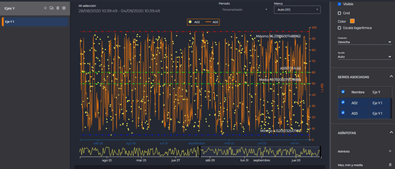
5.3 Ejes X
Muestra los ejes representados en la gráfica y dispone de las siguientes acciones en la barra de herramientas:
- Añadir: Esta acción añadirá un nuevo eje Y.
- Duplicar: Permite el duplicado de los ejes seleccionados con su configuración.
- Borrar: Borrado de los ejes seleccionados.
- Ocultar: Permite ocultar y visualizar en la gráfica los ejes seleccionados.
Si un eje no tiene una serie asociada no será representado en la gráfica
Además de añadir, copiar, borrar, visualizar/ocultar ejes en la gráfica, se da la opción de realizar la configuración . Existen dos tipos:
- Única: los cambios realizados aplicarán a solo un eje.

- Múltiple: los cambios realizados aplicarán a todas las series seleccionadas. Si no hay ningún eje seleccionado se contarán todos como seleccionados.

En la configuración múltiple no es posible editar todas las configuraciones como lo es en la configuración única.
Listado de configuraciones bloqueadas en la edición múltiple de ejes Y:
- Editar el título de un eje.
- Cambiar el intervalo de los ticks
- Configuración de series asociadas.
Cuando se muestre un campo en el que cada eje tiene un valor distinto se mostrará el campo con el valor vacio.
Un eje seleccionado cambia su color de fondo al color corporativo. Para seleccionar o deseleccionar un eje pulsar click izquierdo sobre el. Se podrá utilizar la tecla “Shift” para realizar una selección múltiple rápidamente. Para ello, seleccionar el primer eje del listado que queremos, y luego pulsar sobre el último teniendo pulsada la tecla “Shift”, se seleccionarán automaticamente todos los ejes situados entre el primero y el último.
También sera posible en este listado reordenar los ejes arrastrandolas con click izquierdo.
La configuración de un eje esta dividido en 3 bloques:
5.3.1 General
Permite seleccionar las características generales del eje X seleccionado.
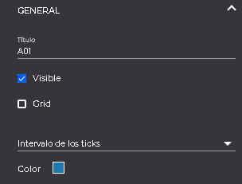
- Título: Permite modificar el título del eje.
- Visible: Casilla que permite modificar la visibilidad del eje.
- Grid: Permite visibilizar líneas verticales para cada división temporal del eje x.
- Intervalo de los ticks: Por defecto su valor es Auto permitiendo que las marcas del intervalo de tiempo a mostrarse en el eje X se ajusten automáticamente en función del periodo de tiempo configurado en la gráfica. Al seleccionar otro valor del desplegable el eje X presentará marcas en función del valor escogido.
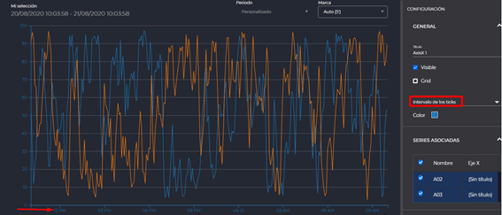

- Color: Permite modificar el color del eje.
5.3.2 Serie asociadas
Muestra el listado de series vinculadas al eje seleccionado, acompañado de una casilla que estará marcada si la serie pertenece al eje seleccionado. Se puede vincular o desvincular una serie a un eje marcando o desmarcando dicha casilla. Si un eje no tiene series asociadas no se mostrará en la gráfica.
5.4 Tipos de gráfica
Permite modificar el tipo de gráfica a otras de los tipos disponibles en el sistema. Debido a incompatibilidades entre todos los tipos de gráfica cuando se cambia el tipo solo se tendrán en cuenta las señales y las fechas seleccionadas. Además, no todas las gráfica soportan los mismos tipos de señales. Cuando se de el caso de que no son compatibles las series se borrarán. Si se da el caso de que ninguna señal es compatible se abrirá el selector de señales para que la gráfica no se quede vacia. Cuando se cambia el tipo de gráfica la configuración actual no se pierde, se queda almacenada hasta que vuelvas a seleccionar ese tipo de gráfica. Por ejemplo, si se está editando una gráfica de tendencia y por error se cambia a agrupados se podrá volver a tendencia y la configuración no se habrá perdido.
Desde el botón “Configuración” se desplegará el panel lateral derecho, que permite modificar las opciones generales de la gráfica en cuestión. Algunas configuraciones son comunes para todas los tipos gráfica:

- Gráfica: permite configurar si la gráfica de tendencia será de tipo
- Simple: Opción por defecto, todas las series comparten eje independientemente de su escala. Permite configurar los ejes accediendo a la configuración ejes Y.
- Multiejes: Dado que cada señal contiene escalas distintas debido al valor de sus datos, con la opción de múltiples ejes se permiten visualizar los valores de las diferentes señales a la vez con sus correspondientes ejes (dichos ejes serán configurables). Dentro de esta configuración para cada serie podemos definir un valor Máximo y Mínimo para los ejes, de forma que los ejes no se autoajustan por sus valores sino que permite que observemos las señales sobre la escala que decidamos
- Multigráfica: Esta opción permite la visualización de las series por separado, cada una sobre un eje.
- Tema: Permite cambiar los colores, los efectos de visualización de la gráfica. Las opciones son Claro, Arena y Oscuro.
- Leyenda Permite mostrar/ocultar la leyenda (1) de la gráfica.
También hay opciones especificas para cada gráfica:
5.4.1 Configuración tendencia
- Navegador: Permite mostrar/ocultar la barra de navegación inferior (2), situada debajo del eje X, y permite modificar el periodo de tiempo representado en el área del gráfico. Las 2 marcas de color negro (3 y 4) representan el periodo de tiempo que se muestra en la gráfica.
- Serie navegador permite seleccionar cuál de las señales configuradas en la gráfica se usará para representarlo en el Navegador.
5.4.1 Configuración agrupados
- Apilar: Permite representar los datos de la gráfica acumulados uno encima del otro. La primera imagen tiene el apilado desactivado y la segunda activado.


- Agrupado por: Se podrá escoger si se quiere agrupar por intervalos temporales o agrupar por cada señal.
- Agrupado X (Nivel 1): Agrupación temporal que se calculará para el eje X.
- Agrupado X (Nivel 2 Multinivel): Al seleccionarlo se creará un segundo eje X con el agrupado seleccionado para tener una información mas extensa.

- Mostrar categorias vacias: Si alguna categoría mostrada no tiene valor se permitirá ocultarla usando este botón.
- Agrupado Y (Mapa de calor): Al seleccionarlo se pasará a una visualización de mapa de calor utilizando las dos agrupaciones. Los valores representados son los mismos que en el modo Multinivel.
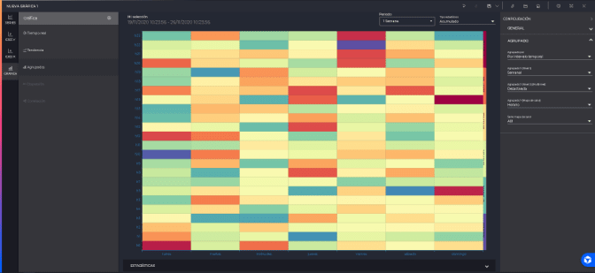
- Serie mapa de calor: En el modo mapa de calor solo se puede representar una serie. Con este selector se puede escoger cual mostrar.
Si estamos en modo Multinivel no podremos activar el modo mapa de calor, y viceversa.
5.4.1 Configuración tiempo real
La gráfica de tiempo real no presenta ninguna configuración específica.
5.5 Plantillas
Las plantillas de documentos son una herramienta para poder utilizar una misma configuración de gráfica para representar las señales de distintos activos del inventario.
Si al crear la gráfica seleccionamos “Nueva plantilla” aparecerá esta nueva sección (1).

Dentro de ella podremos diferenciar 3 apartados distintos.
1) Por una parte, en el panel izquierdo (2) se mostrará la lista de todas las plantillas seleccionadas. Por defecto aparecerán las seleccionadas en el asistente pero podremos añadir hasta 3.
2) En la barra superior tendremos un botón de selección de activos (3). Cuando se abre una plantilla por primera vez se selecciona automaticamente un activo por cada plantilla sobre el que pintar la gráfica, y desde este botón se podrán cambiar por otros.
3) El panel derecho será solo visible cuando se seleccione una plantilla en el panel izquierdo (1). En el se mostrará un listado (4) de todos los atributos compatibles con la gráfica, y se marcarán como seleccionados los que están representados. Si se selecciona un atributo se añadirá una nueva serie a la gráfica, y si se deselecciona se borrará.
Los documentos de tipo plantilla se podrán diferenciar del resto por mostrar un icono especial .
Si guardamos una plantilla de documento al abrirla se abrirá una ventana modal para que seleccionemos los activos que queremos representar.
6 Barra de herramientas
En la parte superior de las gráficas de tendencia y agrupados aparecerá una barra de herramientas, dentro de la cual se podrán diferenciar distintos elementos.
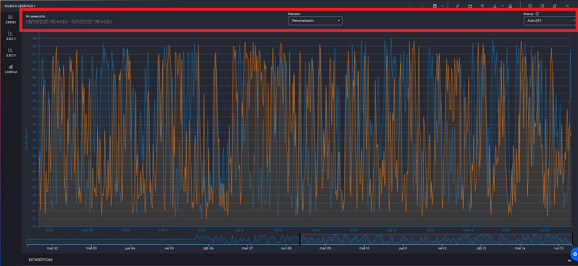
Lo primero que aparece es un resumen del periodo de fechas seleccionado en la gráfica. Si las series tienen periodos de fechas distintos se mostrará el intervalo que cubra las fechas de todas las series.
Después estará el selector de periodos, donde podremos seleccionar entre algunos periodos de fechas predefinidos para aplicar a todas las series. Además, si seleccionamos la opción “Personalizado” se abrirá el selector de fechas para poder tener una configuración mas compleja.
Después, si estamos en la gráfica de tendencia se mostrará un campo para cambiar la marca de todas las series de la gráfica. Sin embargo, si estamos en la gráfica de agrupados se mostrará un campo para cambiar el tipo estadístico de todas las series.
Además, si estamos en modo plantilla, al final de la barra de herramientas aparecerá un botón para cambiar los activos seleccionados.
7 Elementos comunes
7.1 Panel de estadísticas
En el pie de la gráfica, se puede encontrar un desplegable en el cuál se muestra un panel con las estadísticas de las series seleccionadas en el rango de fechas de consulta de la gráfica. Esta funcionalidad no esta disponible en la gráfica de tiempo real.
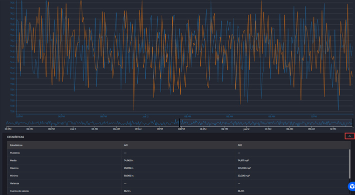
7.2 Tooltips fijos
Al hacer click sobre el area pintada de la gráfica se mostrará una ventana modal para añadir un tooltip fijo. En esta ventana podremos configurar que información queremos mostrar, además de poder escribir un título y una descripción.

Si pulsamos aceptar se añadirá el tooltip fijo, el cual podremos mover por la gráfica, además de cerrarlo o pulsar sobre el botón de editar para volver a abrir la ventana modal.
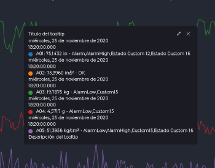